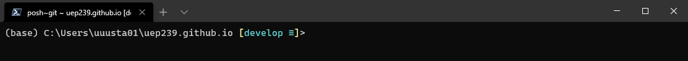
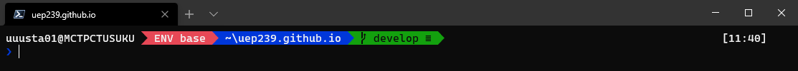
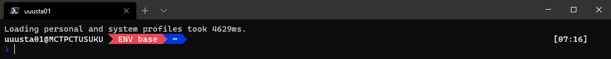

Configuring the Course Environment¶
The following will walk you thorough configuring your personal Windows or macOS computer into a comfortable geospatial programming environment. Note that detailed instructions are not provided for Linux users as we assume you know that you are doing. Please contact the course staff if you do not have access to a suitable computer on which you have administrative privileges or if you need additional assistance with the setup. (Linux users are also welcome to reach out.)
In addition to configuring certain system settings, we will be installing the following software:
Thonny – a beginner-friendly integrated development environment (IDE) for Python
Google Chrome or Mozilla Firefox – required to run JupyterLab without any issues
Visual Studio Code (also known as VS Code) – a powerful code-friendly text editor with many useful features
Git – the most widely used distributed version control software
Miniconda – a lightweight Python distribution that comes bundled with the Conda package manager
Windows Terminal and PowerShell Core – the next-generation command-line interface for Windows
If you already happen to have any of the aforementioned software installed and configured, please carefully review the instructions below to see what configuration is recommended for this course. All course materials after this point assume the following configuration and if yours differs, you want to make sure you are aware of the differences and are able to circumnavigate any potential issues that might result. Also note the following:
If you have worked with code before and already have a favorite Python-friendly text editor and/or IDE installed, feel free to skip the Thonny and/or Visual Studio Code installation and use your preferred application(s) instead.
If you are an experienced Conda user with a preexisting Anaconda/Miniconda installation, there is no need to change your current configuration at this time. Just make sure you have
jupyterlab>=3installed, as we will be using it soon.If you are not too comfortable with the Conda package manager, it is highly recommended that you completely uninstall any preexisting Anaconda or Miniconda installations and start over with a clean sheet.
It goes without saying, but the Windows Terminal and PowerShell Core section applies to Windows users only.
Please perform all installations and configuration changes in the order they are listed, as subsequent steps rely on all previous ones. Toggle the tab corresponding to your operating system to view the appropriate instructions.
Note
Instead of manually typing the commands in the instructions into Terminal or PowerShell, you can just copy and paste the command, and then press Enter/Return to run it. You can easily copy a whole command block by clicking the copy icon in the upper-right corner of the block.
Attention
When copying and pasting multiline command blocks into Terminal or PowerShell, all commands (lines) but the last will automatically run one after another. However, to execute the last command, you must press Enter/Return once all previous commands have finished!
Configure System Preferences¶
Both the Windows and macOS operating systems are configured for the average user by default, with many useful advanced features either disabled or hidden. The average users does not care for these features, but for us, they are extremely useful and perhaps even vital. Please follow the instructions below to show hidden files and filename extensions, and allow the installation and execution of various third-party applications and scripts.
Danger
The following will make your system more vulnerable to malicious scripts and applications. Only install applications and execute scripts that you received from a trustworthy source. Do not execute scripts you do not understand!
Show hidden files and filename extensions:
Open File Explorer.
Select the View tab.
In the Show/Hide section, ensure the following boxes are checked:
File name extensions
Hidden items
Set Windows PowerShell as your default shell:
Right-click on your taskbar and click on Taskbar settings.
Ensure Replace Command Prompt with Windows Powershell in the menu when… is toggled ON.
Allow the execution of third-party scripts:
Right-click on the Start button and select Windows PowerShell (Admin).
Click yes when asked for confirmation, enter an administrator password if needed.
Run the following command (either type or copy and paste, then press Enter to run):
Set-ExecutionPolicy -ExecutionPolicy RemoteSigned -Scope LocalMachine -Force
Show filename extensions and configure Finder:
Open Finder and ensure that View > Show Path Bar is checked.
Then go to Finder > Preferences…
In the General section, ensure all items under Show these items on the desktop are checked.
In the Advanced section, ensure Show all filename extensions is checked.
Show hidden files:
Open Terminal from Applications.
Run the following command (either type or copy and paste, then press Return to run):
defaults write com.apple.finder AppleShowAllFiles YES
Allow the installation of third-party applications:
Open Terminal from Applications.
Run the following command (either type or copy and paste, then press Return to run):
sudo spctl --master-disable
When prompted, enter your administrator password.
Go to System Preferences > Security and Privacy.
Click the padlock in the bottom, enter your administrator password again if needed.
Near the bottom of the General tab, select Anywhere under Allow apps downloaded from.
Install Thonny and a Suitable Web Browser¶
Thonny is a beginner-friendly integrated development environment (IDE) for Python that is actually written in Python and comes bundled with its own self-contained Python environment. To install Thonny on your computer, download a suitable installer from thonny.org and accept all default settings.
If you do not already primarily use the Google Chrome or Mozilla Firefox web browser, you should install one of them and set it as your default browser. Other browsers like Edge or Safari might not be compatible with the JupyterLab interactive notebook interface or the interactive sections of the course website.
Install Visual Studio Code¶
Visual Studio Code (VS Code) is a powerful open-source text editor that works well with both Python and Markdown, and is well suited for our purposes. It is cross-platform and has numerous extremely useful features, making it a robust coding environment for all operating systems. However, its functionality is unmatched on the Windows platform, making it a must-have for aspiring developers who also happen to be Windows users.
Download a suitable Visual Studio Code installer: https://code.visualstudio.com/download
Run the downloaded installer and accept the default settings until you reach Select Additional Tasks.
In the Select Additional Tasks window, ensure the following options are selected:
Add Open with Code action to Windows Explorer file context menu
Add Open with Code action to Windows Explorer directory context menu
Register Code as an editor for supported file types
Add to PATH (requires shell restart) (this should be selected by default, do not unselect)
Click Next and then Install to confirm the installation.
Download a suitable Visual Studio Code installer: https://code.visualstudio.com/download
Locate the downloaded archive and select the magnifying glass icon to open it in Finder.
Drag Visual Studio Code.app into the Applications folder.
Right-click on Visual Studio Code icon and select Options > Keep in Dock.
Launch Visual Studio Code.
Open the Command Palette via View > Command Palette or by pressing Cmd+Shift+P.
Type shell command into the Command Palette.
Select Shell Command: Install ‘code’ command in PATH.
Install and Configure Git¶
Git is the most popular distributed version control software, originally developed by Linus Trovalds – the same Finn who created the Linux operating system (which pretty much runs half of the world). The following will guide you thorough installing Git on your computer and configuring it to be more convenient for you to use throughout the semester.
Attention
You will need to create GitHub account before proceeding (unless you already have one): https://github.com/join
Install and Git and Configure Basic Settings¶
Install Git for Windows:
Download the latest Git for Windows installer: https://git-scm.com/download/win
Run the downloaded installer and accept the default settings until you reach Choosing the default editor used by Git.
In the Choosing the default editor used by Git window, select Use Visual Studio Code as Git’s default editor.
If have another text editor you use, feel free to select that one instead of Visual Studio Code.
Select Use Notepad as Git’s default editor if your preference is not listed.
Click Next and select Override the default branch name for new repositories and keep main as the default name.
Click Next and ensure Git from the command line and also from 3-rd party software is selected (should be the default).
Click Next and accept the default selection Use the OpenSSL library.
Click Next and ensure Checkout Windows-style, commit Unix-style line endings is selected (should be the default).
Click Next and accept the default selection Use MinTTY (the default terminal of MSYS2).
Click Next and ensure Default (fast-forward or merge) is selected (this should be the default selection).
Click Next and accept the default selection Git Credential Manager Core.
Keep clicking though the installer and accepting the default settings until the installation has completed.
Configure Git:
Right-click on the Start button and select Windows PowerShell.
Run the following command, replacing the example name with your own name (wrap it in quotes as in the example):
git config --global user.name "Susie Student"
Run the following command, replacing the example email with the email address linked to your GitHub account:
git config --global user.email susie.student@example.com
Install Git or confirm your installation:
Open Terminal from Applications and run the following command:
git --version
If an installer launches, walk through the installer and accept all default settings.
If a version number is returned instead and no installer launches, you have Git installed.
Configure Git:
Close any open Terminal windows and open a new Terminal window from Applications.
Run the following command, replacing the example name with your own name (wrap it in quotes as in the example):
git config --global user.name "Susie Student"Run the following command, replacing the example email with the email address linked to your GitHub account:
git config --global user.email susie.student@example.com
Run the following command:
git config --global init.defaultBranch main
Configure the text editor Git uses by default as follows:
If you installed Visual Studio Code, run the following:
git config --global core.editor "code --wait"If you would like to use a different text editor, refer to the Git documentation for the appropriate command.
If you are unable to find a suitable command for your preference, default to nano as follows:
git config --global core.editor "nano -w"
Configure an SSH Key for GitHub Authentication¶
Setting up an SSH (Secure Shell) key and linking it to your GitHub account will allow you to use the git command to access your GitHub account directly without having to manually type in your password and username every time.
Warning
This will allow anyone with access to your computer (or local user account) also access your GitHub account.
Note
If you know that you already have a public-private SSH key pair that you would like to use for GitHub, feel free to skip the section on generating an SSH key. Any preexisting SSH keys would be located in the ~/.ssh directory.
Create a new SSH key to use with GitHub:
Right-click on the Start button and select Windows PowerShell.
Run the following command, replacing the example email with the email address linked to your GitHub account:
ssh-keygen -t ed25519 -C "susie.student@example.com"
When prompted to enter a file in which to save the key, press Enter to accept the default location.
Make note of the filename if it differs from the default filename of
id_ed25519.
When prompted to enter passphrase, leave it empty and press Enter twice to confirm.
Link a new SSH key to your GitHub account:
If you do not already have Windows PowerShell open, right-click on the Start button and select Windows PowerShell.
Run the following command to copy the newly generated (or any other desired) SSH public key to your clipboard (modify the filename if needed, note that the filename should end with
.pub):Get-Content (Resolve-Path ~\.ssh\id_ed25519.pub) | clip
Go to https://github.com/settings/keys and log in with your GitHub account if needed.
Click on New SSH key.
The Title field should contain a descriptive label that will allow you to identify this key later. (As the key is linked to your computer, the name or description of the computer would be a good choice, for example ThinkPad X1 or similar.)
Paste the copied public key into the Key field.
Click on Add SSH key.
If prompted, confirm your GitHub password.
Create a new SSH key to use with GitHub:
Launch Terminal from Applications.
Run the following command, replacing the example email with the email address linked to your GitHub account:
ssh-keygen -t ed25519 -C "susie.student@example.com"When prompted to enter a file in which to save the key, press Return to accept the default location.
Make note of the filename if it differs from the default filename of
id_ed25519.
When prompted to enter passphrase, leave it empty and press Return twice to confirm.
Link a new SSH key to your GitHub account:
If not already open, launch Terminal from Applications.
Run the following command to copy the newly generated (or any other desired) SSH public key to your clipboard (modify the filename if needed, note that the filename should end with
.pub):pbcopy < ~/.ssh/id_ed25519.pub
Go to https://github.com/settings/keys and log in with your GitHub account if needed.
Click on New SSH key.
The Title field should contain a descriptive label that will allow you to identify this key later. (As the key is linked to your computer, the name or description of the computer would be a good choice, for example MacBook Air or similar.)
Paste the copied public key into the Key field.
Click on Add SSH key.
If prompted, confirm your GitHub password.
Install the GitHub CLI (Optional)¶
The GitHub command-line interface (CLI) allows you to work with your GitHub repositories without having to type out long commands and gives you access to additional GitHub functionality not possible with the traditional git tool. Once you are more comfortable with Git and GitHub, it will simplify various workflows and make your life easier. However, right now you might not see much value in installing it, so feel free to skip this part.
Navigate to: https://github.com/cli/cli/releases/latest
Scroll down to Assets and download the MSI installer.
The filename should be similar to
gh_X.X.X_windows_amd64.msiwithX.X.Xreplaced with the latest version number.
Run the downloaded installer and accept all default settings.
Right-click on the Start button and select Windows PowerShell.
Configure the GitHub CLI by running the following command:
gh auth login
Select GitHub.com and Login with a web browser, then follow all subsequent instructions.
You will need either Homebrew or MacPorts to install the GitHub CLI. If you do not already have either of those set up, it is recommended you skip this section instead of trying to set up another package manager. We do not really need the GitHub CLI and it is not worth the hassle.
Caution
If you already have Anaconda or Miniconda installed, you should always deactivate all active Conda environments using conda deactivate before installing anything using a different package manager like Homebrew or MacPorts.
Launch Terminal from Applications.
Install the GitHub CLI by running the following commands:
brew install gh
Run the following command to configure the GitHub CLI:
gh auth login
Select GitHub.com and Login with a web browser, then follow all subsequent instructions.
Launch Terminal from Applications.
Install the GitHub CLI by running the following commands:
sudo port install gh
Run the following command to configure the GitHub CLI:
gh auth login
Select GitHub.com and Login with a web browser, then follow all subsequent instructions.
Install and Configure Miniconda¶
Miniconda is a lightweight Python distribution that comes bundled with the Conda package manager. You might have also heard of Anaconda, which is a beefier version of Miniconda that also ships with numerous data-science-related Python packages preinstalled. We will not need most of those packages and the packages included in Anaconda are likely to be incompatible with various geospatial packages, which will lead to problems later in the semester. Hence, we will install the lightweight Miniconda instead and manually add any packages we need along the way. The following will guide you through installing Miniconda and configuring your base environment. Do not worry if you do not fully understand what is going on at this point. We will talk about Conda and Python package management later in the course, after which it will all make more sense.
Warning
You must completely uninstall any previous Anaconda or Miniconda installations before proceeding with these instructions to avoid any potential issues. Please contact the course staff if you are unsure how to do that.
Caution
After completing this setup, your base environment will be configured and you should NOT install any additional packages into it. We will talk about the importance of that later in the course.
Click here to download the latest 64-bit Minconda installer for Windows.
Run the downloaded installer and select the following options:
Install for Just Me (recommended)
Accept the default destination folder
DO NOT add Miniconda3 to PATH (keep this unchecked)
DO register Miniconda3 as your default Python (keep this checked)
Once the installer has finished, open Anaconda PowerShell Prompt from Start > Anaconda3.
Using Anaconda PowerShell Prompt, run the following commands to configure your base environment:
conda config --add channels conda-forge conda config --set channel_priority strict conda update conda --yes conda install mamba --yes mamba update --all --yes mamba install jupyterlab>=3 nb_conda_kernels --yes
Feel free to just copy all of the commands and paste them into the prompt. All but the last line should automatically run one after the other. You will need to press Enter to run the last command once all previous commands have finished.
Open Terminal from Applications.
Download the latest Miniconda install script for macOS by running the following command:
curl -L -O https://repo.anaconda.com/miniconda/Miniconda3-latest-MacOSX-x86_64.sh
If that does not work, try this alternative download command:
wget https://repo.anaconda.com/miniconda/Miniconda3-latest-MacOSX-x86_64.sh
Once the download has finished, run the following command to start the installation process:
bash Miniconda3-latest-MacOSX-x86_64.sh
Follow the installation prompts and accept all default settings.
Answer YES to Do you wish the installer to initialize Miniconda3 by running conda init?
Once the installer has finished, close your terminal and restart it via Applications > Terminal.
The line where you enter your commands should now begin with
(base).STOP and contact course staff if that is not the case.
Run the following commands to configure your base environment:
conda config --add channels conda-forge conda config --set channel_priority strict conda update conda --yes conda install mamba --yes mamba update --all --yes mamba install jupyterlab>=3 nb_conda_kernels --yes
Feel free to just copy all of the commands and paste them into the terminal. All but the last line should automatically run one after the other. You will need to press Return to run the last command once all previous commands have finished.
Install Windows Terminal and PowerShell Core¶
Note
Obviously, the following is for Windows users only. Others are welcome to skip ahead to the next section.
Windows is often criticized amongst developers for having a clunky and uncomfortable command-line interface. However, that has changed in recent years with the release of Windows Terminal and PowerShell Core – a new and improved cross-platform version of PowerShell. (Note that this is different and actually completely separate from the PowerShell included in Windows by default, also known as Windows PowerShell.) To guarantee that you will have the best and most comfortable possible command-line interface on your Windows computer, let us install Windows Terminal along with PowerShell Core and configure them to work well with both Conda and Git.
Both Windows Terminal and PowerShell Core are available from the Microsoft Store. Use the links below install them in the order specified – PowerShell Core before Windows Terminal.
Install PowerShell Core: https://www.microsoft.com/en-us/p/powershell/9mz1snwt0n5d
Install Windows Terminal: https://www.microsoft.com/en-us/p/windows-terminal/9n0dx20hk701
Configure Windows Terminal and PowerShell Core¶
Once you have installed both PowerShell Core and Windows Terminal, configure them to automatically initiate Conda and display Git repository status by doing the following.
Right-click on the Start button and select Windows PowerShell (Admin).
Click yes when asked for confirmation, enter an administrator password if needed.
Run the following commands to configure the prerequisites needed to install modules from the PowerShell Gallery:
Install-PackageProvider -Name NuGet -Force Install-Module PowerShellGet -Scope CurrentUser -Force -AllowClobber
After both commands have finished running, close Windows PowerShell.
Open the Start menu and scroll down until you see Windows Terminal.
Right-click on Windows Terminal in the Start menu and select More > Run as administrator.
Click yes when asked for confirmation, enter an administrator password if needed.
If the first line reads
Windows Powershellinstead ofPowershell 7.X.X, STOP and contact course staff.Run the following commands to install and configure PoSh-Git (a Git status module for PowerShell):
PowerShellGet\Install-Module posh-git -Scope CurrentUser -AllowPrerelease -Force Add-PoshGitToProfile
Run the following command to open your PowerShell profile configuration file in Notepad:
notepad (Resolve-Path "~\Documents\PowerShell\Microsoft.PowerShell_profile.ps1")
Confirm that the file contents are as follows, STOP and contact course staff if that is not the case:
Import-Module posh-git
Modify the file so that it contains the following instead:
Import-Module posh-git Invoke-Expression (Resolve-Path "~\miniconda3\shell\condabin\conda-hook.ps1") Invoke-Conda activate (Resolve-Path "~\miniconda3") Clear-Host
Save the file via File > Save or by pressing Ctrl+S.
Close Notepad.
Close Windows Terminal and restart it via Start > Windows Terminal.
Confirm that the line where you enter your commands now begins with
(base).IF YES, you are all set and should now use Windows Terminal for anything command-line related.
IF NOT, contact the course staff for assistance.
Install Visual Studio Code Python Extensions¶
Visual Studio Code is extremely modular and extensible, meaning that it has numerous extensions available that increase or improve its usability. The following will guide you through installing and configuring a couple Python-related extensions that ought to make your life easier in this course.
Launch Visual Studio Code via Start > Visual Studio Code.
With Visual Studio Code open, press Ctrl+P to launch Quick Open.
Type
ext install ms-python.pythonand press Enter.Check on the status of the installation on the panel in the left side.
Once the extension has installed, launch Quick Open again by pressing Ctrl+P.
Type
ext install ms-python.vscode-pylanceand press Enter.Check on the status of the installation on the panel in the left side and wait for the extension to install.
Launch the Command Palette via View > Command Palette or by pressing Ctrl+Shift+P.
Type terminal select default shell into the Command Palette.
Select Terminal: Select Default Shell and then PowerShell (store).
Open the Command Palette via View > Command Palette or by pressing Ctrl+Shift+P.
Type python select interpreter into the Command Palette.
Select Python: Select Interpreter and wait for the Command Palette to reopen.
Once the Command Palette reopens, select Python 3.X.X 64-bit (conda).
Open the Command Palette via View > Command Palette or by pressing Ctrl+Shift+P.
Type python select linter into the Command Palette.
Select Python: Select Linter and then Disable Linting.
Open the Command Palette via View > Command Palette or by pressing Ctrl+Shift+P.
Type open settings json into the Command Palette.
Select Preferences: Open Settings (JSON).
Once the
settings.jsonfile opens, confirm that its contents resemble the following (will not be exactly the same):{ "python.pythonPath": "C:\\Users\\...\\miniconda3\\python.exe", "terminal.integrated.shell.windows": "C:\\Users\\...\\pwsh.exe", "python.linting.enabled": false }
After
"python.linting.enabled": falsetype a comma and then press Enter.Type the following on the new line:
"python.languageServer": "Pylance"Now your
settings.jsonfile should resemble the following:{ "python.pythonPath": "C:\\Users\\...\\miniconda3\\python.exe", "terminal.integrated.shell.windows": "C:\\Users\\...\\pwsh.exe", "python.linting.enabled": false, "python.languageServer": "Pylance" }
Save the file via File > Save or by pressing Ctrl+S.
Close the
settings.jsontab, then close Visual Studio Code.
Launch Visual Studio Code.
With Visual Studio Code open, press Cmd+P to launch Quick Open.
Type
ext install ms-python.pythonand press Return.Check on the status of the installation on the panel in the left side.
Once the extension has installed, launch Quick Open again by pressing Cmd+P.
Type
ext install ms-python.vscode-pylanceand press Return.Check on the status of the installation on the panel in the left side and wait for the extension to install.
Launch the Command Palette via View > Command Palette or by pressing Cmd+Shift+P.
Type python select interpreter into the Command Palette.
Select Python: Select Interpreter and wait for the Command Palette to reopen.
Once the Command Palette reopens, select Python 3.X.X 64-bit (‘base’:conda).
Launch the Command Palette via View > Command Palette or by pressing Cmd+Shift+P.
Type python select linter into the Command Palette.
Select Python: Select Linter and then Disable Linting.
Launch the Command Palette via View > Command Palette or by pressing Cmd+Shift+P.
Type open settings json into the Command Palette.
Select Preferences: Open Settings (JSON).
Once the
settings.jsonfile opens, confirm that its contents resemble the following (will not be exactly the same):{ "python.defaultInterpreterPath": "/users/.../miniconda3/bin/python", "python.linting.enabled": false }
After
"python.linting.enabled": falsetype a comma and then press Return.Type the following on the new line:
"python.languageServer": "Pylance"Now your
settings.jsonfile should resemble the following:{ "python.defaultInterpreterPath": "/users/.../miniconda3/bin/python", "python.linting.enabled": false, "python.languageServer": "Pylance" }
Save the file via File > Save or by pressing Cmd+S.
Close the
settings.jsontab, then close Visual Studio Code.
Jazz Up your Terminal (Optional)¶
You will be spending a lot of time working on the command line in this course and you will quickly realize that your terminal is one of the most powerful tools in your disposal. However, right now it looks kind of dull…

Depending on your operating system and particular configuration, it might look even more bland than that. But it does not have to be this way! Your terminal window does not need to look like it is perpetually stuck in the 1980s. Instead, it could look like this…

Making your terminal window more beautiful and colorful like this will not add any additional functionality. Nor will it make you a better programmer. However, it will make you feel like a better programmer and make the time spent staring at your terminal window at least somewhat more enjoyable. (And that might just make you a better programmer in the long run.)
Install the Cascadia Code PL font:
Navigate to: https://github.com/microsoft/cascadia-code/releases/latest
Download the
CascadiaCode-XXXX.XX.zipfile located under Assets.Extract the contents of the downloaded ZIP-file to a suitable location.
Open the extracted folder, then open the
ttffolder.Right-click on
CascadiaCodePL.ttfand select *Install.
Configure Windows Terminal to use the Cascadia Code PL font:
Launch Windows Terminal via Start > Windows Terminal.
Click on the down arrow to the right of the plus sign and select Settings from the drop-down menu.
A
settings.jsonfile for will open in a text editor. (If prompted to select a text editor, choose Visual Studio Code.)Find the line
// Put settings here that you want to apply to all profiles.in the “defaults"section.Place the line
"fontFace": "Cascadia Code PL"into the"defaults"section so that it looks like this:"defaults": { // Put settings here that you want to apply to all profiles. "fontFace": "Cascadia Code PL" },
Save the file via File > Save or by pressing Ctrl+S.
Close the
settings.jsonfile or tab (depending on your text editor).
Configure the Visual Studio Code terminal to use the Cascadia Code PL font:
If not already open, launch Visual Studio Code via Start > Visual Studio Code.
Open the Command Palette via View > Command Palette or by pressing Ctrl+Shift+P.
Type open settings json into the Command Palette.
Select Preferences: Open Settings (JSON).
A
settings.jsonfile resembling the following will open:{ "python.pythonPath": "C:\\Users\\...\\miniconda3\\python.exe", "terminal.integrated.shell.windows": "C:\\Users\\...\\pwsh.exe", "python.linting.enabled": false, "python.languageServer": "Pylance" }
After
"python.languageServer": "Pylance"type a comma and then press Enter.Type the following on the new line:
""terminal.integrated.fontFamily": "Cascadia Code PL"Now your
settings.jsonfile should look like this:{ "python.pythonPath": "C:\\Users\\...\\miniconda3\\python.exe", "terminal.integrated.shell.windows": "C:\\Users\\...\\pwsh.exe", "python.linting.enabled": false, "python.languageServer": "Pylance", "terminal.integrated.fontFamily": "Cascadia Code PL" }
Save the file via File > Save or by pressing Ctrl+S.
Close the
settings.jsontab, then close Visual Studio Code.
Install and configure Oh-My-PoSh:
Launch Windows Terminal via Start > Windows Terminal.
Run the following commands to install Oh-My-PoSh and download a suitable theme:
Install-Module PSReadLine -AllowPrerelease -Scope CurrentUser -Force Install-Module oh-my-posh -Scope CurrentUser -MaximumVersion 2.1 -Force New-Item -Path "~\Documents\PowerShell\PoshThemes" -ItemType "directory" -Force Invoke-WebRequest -Uri "https://raw.githubusercontent.com/ukukas/paradox-cascadia/main/paradox-cascadia.psm1" -OutFile "~\Documents\PowerShell\PoshThemes\paradox-cascadia.psm1"
Run the following command to open your PowerShell profile configuration file in Notepad:
notepad (Resolve-Path "~\Documents\PowerShell\Microsoft.PowerShell_profile.ps1")
Modify the file so that it contains the following:
Import-Module posh-git Import-Module oh-my-posh Set-Theme paradox-cascadia Invoke-Expression (Resolve-Path "~\miniconda3\shell\condabin\conda-hook.ps1") Invoke-Conda activate (Resolve-Path "~\miniconda3") Clear-Host
Save the file via File > Save or by pressing Ctrl+S.
Close Notepad.
Close Windows Terminal and restart it via Start > Windows Terminal.
Confirm that your terminal now looks like the following. Contact the course staff for assistance if not. 
Note that there are numerous other themes available for Oh-My-PoSh as well. However, most of them require additional configuration or a specialized Nerd Font to display properly. Right now we configured Oh-My-PoSh to use a custom theme that works well with the Cascadia Code PL font, which is an official Microsoft font designed for use with Windows Terminal. Once you are more comfortable with PowerShell and its configuration, feel free to explore the Oh-My-PoSh documentation and set up a different theme of your liking.
There are two frameworks available for you to customize and beautify your terminal – Oh-My-Zsh and Oh-My-Bash. Which you should use depends on your default shell. If you are using macOS 10.15 Catalina or newer and the line where you enter your commands in Terminal ends with a percent sign (%), then you are likely using Zsh. And if you are using macOS 10.14 Mojave or older and the line where you enter your commands in Terminal ends with a dollar sign ($), then you are probably using Bash. However, various configuration changes can alter both your default shell and its appearance. Hence, to make sure you know which is your default shell, do the following:
Launch Terminal from Applications.
Run the following command and take note of the response:
echo $0
If the response is
zsh, then you are running Zsh and should check out Oh-My-Zsh.If the response is
bash, then you are running Bash and should check out Oh-My-Bash.
Use the links above and follow the instructions corresponding to your default shell to customize your terminal to your liking. Note that some themes might require you to install a custom font. Once you have finalized the configuration, you might need to do the following in order to be able to see your Conda environment in your Terminal again.
Launch Terminal from Applications.
Run the following commands:
source miniconda3/bin/activate conda init